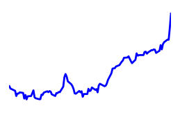

Список компаний:Список компаний учавствующие в финансовом мониторинге. ?
| Компания | Акция, min/max, $Стоимость акции на последнем закрытие. Максимальное и минимальное значение стоиомсти за 5 дней. ? | Измение стоим.Изменение стоимости акции по сравнению с предыдущим закрытием. ? | Доход, Прибыль, млн.$Общий доход и чистая прибыль компании за последние 4 квартала. ? | Рентабельность, EPSРентабельность дохода=Чистая прибыль/Общий доход. EPS - Какой доход принесла каждая акция. ? | Средняя рекомендацияСредняя рекомендация аналитиков относительно прогноза 1-5: 1-Покупать, 3- Держать(не покупать и не продавать), 5-Продавать. ? | ДивидендыДата последней выплаты дивидендов и сумма на акцию. Если отсутствует - дивиденды не выплачиваются. ? | Последняя новостьПоследняя финансовая новость по указаной компании. ? | ДинамикаДинамика роста/падения акций за последнии 100 дней. ? |
|---|---|---|---|---|---|---|---|---|
| Daimler | 85.30 0.00 84.95 | +0.45 (+0.0053%) | 161,742.00 9,471.00 | 5.86 8.85 | Держать 3.00 | - - | Аналитики Deutsche Bank AG дают Daimler AG (ETR: DAI) 90,00 Целевая цена | |
| Honda | 32.80 30.77 32.94 | +0.93 (+0.0284%) | 14,753,797.00 646,115.00 | 4.38 358.50 | Пр.покупать 2.45 | 0.189 2017-06-23 | Auto Stock Roundup: Honda, Autoliv, Goodyear, Cummins Top Earnings, Tesla Misses |  |
| General Motors | 42.60 41.90 45.17 | -0.53 (-0.0124%) | 151,791.00 3,122.00 | 2.06 4.63 | Держать 2.52 | 0.38 2017-12-21 | Кроссовер внедорожников дал General Motors еще один рост продаж. Но этого было недостаточно, чтобы компенсировать значительное снижение продаж седанов... | |
| Tesla | 299.26 292.63 332.61 | -21.82 (-0.0729%) | 10,755.14 -1,407.40 | -13.09 -8.56 | Держать 2.91 | - - | Tesla Motors Inc. (TSLA) движется на спад всплеска на 02 ноября |
Относительный рост акций, %%Относительный рост акций компаний. За 1 берем стомость акции 100 дней назад. ?
Рентабельность вложений в акцииСколько $$ заработал каждый вложенный $, учитывая рост акций и выплаты дивидендов ?
Выплаты дивидендов, $Временная шкала выплаты дивидендов на 1 акцию.
Если отсутствует - дивиденды не выплачиваются. ?
Рекомендации аналитиковРаспределение голосов ведущих аналитиков в вопросе "что делать сейчас с акциями" ?
Движение денежных средств за указанный период по видам деятельности: Основная, Инвестиционная, Финансовая и Разница статочная, млн.$Общая картина распоряжения денежными средствами.
Зеленый - приход денег, красный - уход.
Например: "красная" полоса в инвестиционной деятельности: компания инвестирует деньги куда-то, "зеленая" - в компанию инвестирует кто-то ?
Пики колебаний акций, %%Скачки роста акций. ?